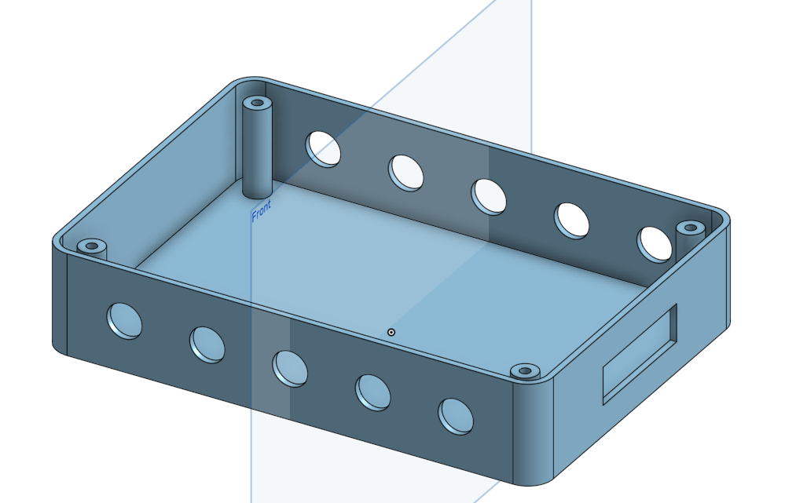
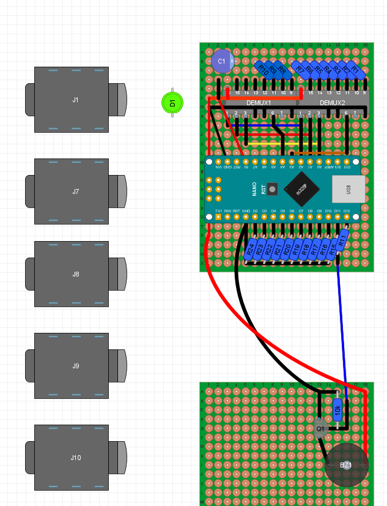
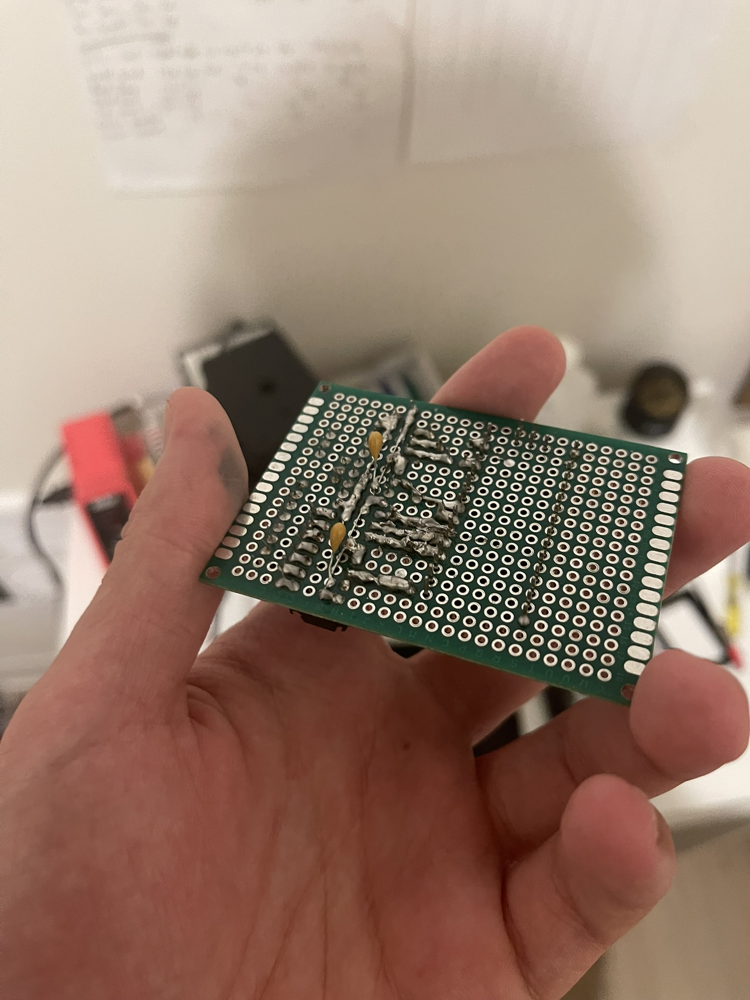
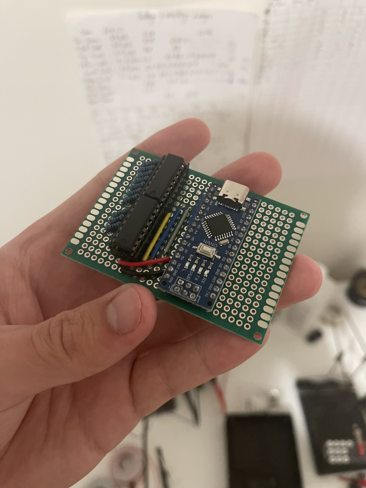
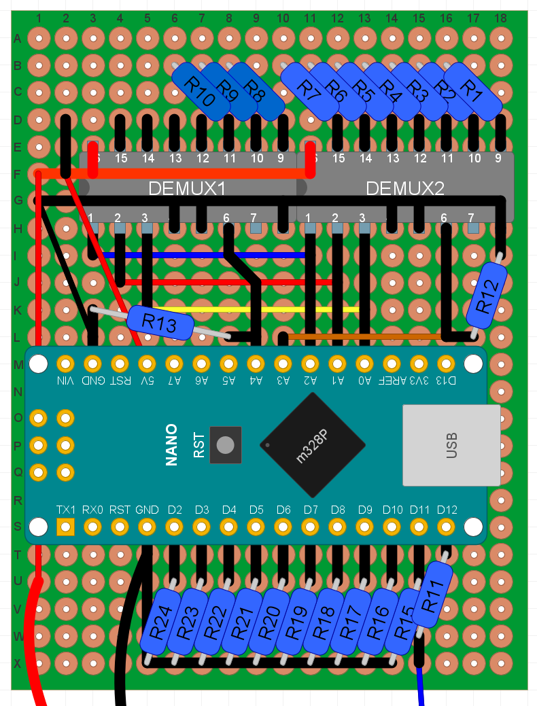

Motivation
I love Science bowl. In highschool, I was team captain of the Science bowl team. At Berkeley, I write physics problems for the Berkeley Science Bowl and consistently practice and play at the collegiate level with the Berkeley Quiz Bowl (who recently won first place in the national competition! Take *that* Stanford)
However, lockout buzzer box used in both of these competitions is extremely expensive. The open source projects that exist to address this issue tend to be deficient and are otherwise unsatisfactory. Trying to purchase these open source buzzer boxes from their creators often costs over $500, despite the cost of parts being far less.
There is one clear solution to this problem: JUST MAKE ONE MYSELF!
Initial CAD Design
At first I used Tinkercad to design the remote boxes because I assumed they would be extremely simple to design.
However, the lack of features in Tinkercad counterintuitively made it more difficult than OnShape, for a couple of reasons
- It was difficult to set precise dimensions and constraints.
- Making changes to existing features such as changing the dimensions often required redundant work.
- Many shapes don't have a notion of "center" so you had to line up shapes by eye, often using temporary shapes as makeshift tools. WHAT.
Anyways, after 3D printing 4 slightly dimensionally incorrect boxes, I gave up and went back to OnShape for the final design.

The project remained dimensionally consistent and percise due to making careful technical sketches beforehand on graph paper. I felt like an engineer from the 70s making them, but they unironically saved a ton of headache.

I also have started a preliminary outline of what the central box would look like.

The 10 ports on either side connect five for each team, with a central SPDT button physically connected to the box's lid to act as a reset button.
The box is sized to perfectly house all of the necessary electronics, taking into acount the microcontroller (Arduino NANO)
Soldering the Control Board

This is the design I came up with. The drawing above was created with DIYLC 6.5.
At the center is the Arduino NANO that serves as the main "brains" of the operation. The two DIP ICs are 3-8 multiplexers which allow the arduino to pass current to the LEDs. The other side (D2-D11) is used to listen for butten presses from the buzzer. Both of these are wired to the 6.5mm audio jacks on the sides.
My previous experience making circuits was the Altair8800 project, which used stripboard; thus doing the whole solder-bridge protoboard dance was a new experience for me. I could tell that over time my skill at making the solder bridges--especially long solder bridges--improved dramatically. Just like a normal joint, it is important to ensure both "sides" of the bridge are hot enough to reflow and to let surface tension make the bridge neat.


Update 9/23/2026

Added pulldown resistors R12 and R13 because *apparently* the Arduino Nano doesn't have internal pulldowns, only pullups or high impedance.
I also soldered up the buzzer driver but I am too lazy to take a picture of it. Interestingly, the switching magnetic field of soldering iron caused the piezo in the buzzer to vibrate at an audiable level. Fascinating.
Also, I had to rearrange the buzzer driver because I soldered in the buzzer backwards :facepalm:.